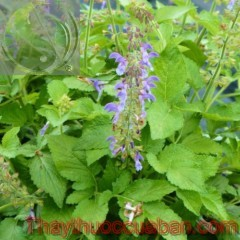
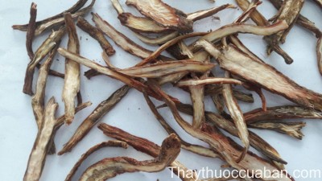

Tên khác
Tên thông thường: Ðan sâm, Viểu đan sâm, Vử đan sâm, Vân nam thử vỹ, Huyết sâm, Xích sâm, Huyết căn, Tử đan sâm.
Tên dược: Radix Salviae militiorrhizae
Tên khoa học: Salvia miltiorrhiza Bge.
Họ khoa học: thuộc họ Hoa môi ( Lamiaceae)
Cây đan sâm
(Mô tả, hình ảnh cây đan sâm, phân bố, thu hái, thành phần hóa học, tác dụng dược lý...)
Mô tả:

Mùa ra hoa từ tháng 5 đến tháng 8. Mùa quả từ tháng 6-9 hàng năm.
Phân bố:
Cây được trồng nhiều ở Trung quốc như: An huy, Sơn tây, Hà bắc, Tứ xuyên, Giang tô mới được di thực vào nước ta trồng ở Tam đảo.
Bộ phận dùng làm thuốc:
Dược liệu là rễ đã phơi hoặc sấy khô của cây Đan sâm (Salvia mitiorrhiza).
Mô tả dược liệu:

Vị thuốc đan sâm là rễ của cây đan sâm - là một vị thuốc quý. Rễ ngắn, thô, đôi khi ở đầu rễ còn sót lại gốc của thân cây. Rễ hình trụ dài, hơi cong queo, có khi phân nhánh và có rễ con dạng tua nhỏ; dài 10-20 cm, đường kính 0,3-1 cm. Mặt ngoài màu đỏ nâu hoặc đỏ nâu tối, thô, có vân nhăn dọc. Vỏ rễ già bong ra, thường có màu nâu tía. Chất cứng và giòn, mặt bẻ gẫy không chắc có vết nứt, hoặc hơi phẳng và đặc, phần vỏ màu đỏ nâu và phần gỗ màu vàng xám hoặc màu nâu tía với bó mạch màu trắng vàng, xếp theo hình xuyên tâm.
Bào chế:

Đan sâm khô, loại bỏ tạp chất và thân sót lại, rửa sạch, ủ mềm, thái lát dày, phơi khô để dùng. Tửu đan sâm (Chế rượu): Lấy đan sâm đã thái phiến, thêm rượu, trộn đều dược liệu với rượu, đậy kín, để 1 giờ cho ngấm hết rượu, đem sao nhỏ lửa đến khô, lấy ra, để nguội. Cứ 10 kg đan sâm cần 1 lít rượu.
Thành phần hóa học:
Các dẫn chất có nhóm ceton (tansinon I, tansinon II, tansinon III ) và chất tinh thể màu vàng cryptotanshinon, isocryptotanshinon, methyl-tanshinon. Ngoài ra còn có acid lactic, phenol, vitamin E. Công năng: Khứ ứ chỉ thống, hoạt huyết thông kinh, thanh tâm trừ phiền. Công dụng: Chữa hồi hộp mất ngủ, kinh nguyệt không đều, bế kinh, hạ tiêu kết hòn cục, khớp sưng đau, mụn nhọt sưng tấy.
Tác dụng dược lý:

Đan sâm có tác dụng làm giãn động mạch vành, khiến lưu lượng máu của động mạch vành tăng rõ, cải thiện chức năng tim, hạn chế nhồi máu cơ tim. Trên thực nghiệm chuột nhắt hay chuột lớn thuốc đều có tác dụng tăng hoặc kéo dài tỷ lệ sống trong điều kiện thiếu oxy.
Thuốc có tác dụng cải thiện tuần hoàn ngoại vi, chống đông máu.
Có tác dụng hạ huyết áp.
Trên thực nghiệm thỏ gây xơ mỡ mạch, thuốc có tác dụng làm giảm triglicerit của gan và máu.
Thuốc có tác dụng kháng khuẩn, an thần, ức chế sự phát triển của tế bào ung thư trên chuột thực nghiệm.
Vị thuốc đan sâm
(Công dụng, liều dùng, quy kinh, tính vị...)

Tính vị:
Ðắng và hơi lạnh, không độc.
Quy kinh:
Tâm, tâm bào và can
Tác dụng:

Hoạt huyết hóa ứ, lương huyết tiêu ung, dưỡng huyết an thần, thanh nhiệt trừ phiền.
Sách Bản kinh: " Chủ tâm phúc tà khí, trường minh ( sôi bụng), hàn nhiệt tích tụ, phá trưng trừ hà, chỉ phiền mạn, ích khí".
Sách Danh y biệt lục: " Dưỡng huyết, khử tâm, phúc kết khí, yêu tích cường ( cứng cột sống), cước tý, trừ phong tà lưu nhiệt, uống lâu có lợi".
Sách Nhật hoa tử bản thảo: Dưỡng thần định chí, thông lợi quan mạch. Trị lãnh nhiệt lao, đau nhức khớp, chân tay cử động khó, bài nùng chỉ thống, sinh cơ trưởng nhục, phá ứ huyết, bổ tân sinh huyết an thai, tống tử thai, chỉ huyết băng đới hạ, điều phụ nhân kinh mạch không đều, huyết tà tâm phiền, ác sang giới tiễn, nhọt độc, đơn độc, đau đầu mắt đỏ, ôn nhiệt sinh cuồng".
Sách Bản thảo cương mục: " hoạt huyết, thông tâm bào lạc, trị sán thống".
Sách Phụ nhân minh lý luận viết: " tứ vật thang trị bệnh phụ nhân, bất kể trước hay sau sinh, kinh thủy nhiều hay ít vị Đan sâm đều dùng được. Độc vị Đan sâm tán chủ trị như Tứ vật thang. Đan sâm có tác dụng phá súc huyết, bổ tân huyết, an sinh thai, tống tử thai, chỉ băng trung đới hạ, điều kinh mạch, tác dụng như Đương qui, Địa hoàng, Khung thược".
Sách Bản thảo cầu chân: " Đan sâm sinh tân an thai, điều kinh trừ phiền, dưỡng thần định chí và tất cả các chứng phong tý, băng đới, trưng hà, mục xích, sán thống, sang giới sưng đau, do thuốc có tác dụng khu ứ mà bệnh khỏi".
Cách dùng, liều lượng:
Ngày 6 – 12g, dạng thuốc sắc.
Chỉ định và phối hợp:
-Huyết ứ bên trong biểu hiện kinh nguyệt không đều, mất kinh, đau bụng hoặc đau bụng sau đẻ. Ðan sâm phối hợp với ích mẫu, Ðào nhân, Hồng hoa và Ðương qui.
- Khí huyết ứ trệ biểu hiện đau vùng tim, đau bụng hoặc đau vùng thượng vị. Ðan sâm phối hợp với Sa nhân và Ðàn hương trong bài Ðan sâm ẩm.
- Huyết ứ biểu hiện đau mỏi toàn thân hoặc đau khớp. Ðan sâm phối hợp với Ðương qui, Xuyên khung và Hồng hoa.
- Mụn nhọt và sưng nề. Ðan sâm phối hợp với Kim ngân hoa, Liên kiều và Nhũ hương.
- Bệnh có sốt do phong tà xâm nhập dinh phận biểu hiện sốt cao, bứt rứt, dát sần, chất lưỡi đỏ hoặc đỏ thẫm, rêu lưỡi ít. Ðan sâm phối hợp với Sinh địa hoàng, Huyền sâm và Trúc diệp.
- Dinh huyết bất túc kèm theo nội nhiệt biểu hiện hồi hộp đánh trống ngực, bứt rứt và Mất ngủ. Ðan sâm phối hợp với Toan táo nhân và Dạ giao đằng.
Ứng dụng lâm sàng của vị thuốc đan sâm
Đan sâm được sử dụng rộng rãi và có hiệu quả trong điều kiện trị chứng huyết ứ ( máu cục, bầm tím, ban ứ huyết, huyết tụ, máu lưu thông chậm.)
Trị bệnh phụ khoa, điều hòa kinh nguyệt:
Đan sâm tán: Đan sâm 20 - 40g, tán bột mịn mỗi lần 6 - 8g, chia 2 lần uống trong ngày có tác dụng điều kinh hoặc sau sanh sản dịch không ra hết. Uống với rượu nóng hoặc hòa với đường mía uống càng tốt.
Đan sâm 15g, Trạch lan 12g, Hương phụ 8g, sắc uống. Hoặc dùng Đan sâm, Đương qui đều 15g, Tiểu hồi 8g, sắc uống tác dụng như bài Đan sâm tán.
Đan sâm phối hợp với Hồng hoa, Đào nhân, Ích mẫu thảo trị đau bụng kinh
Trị đau bụng do nguyên nhân khác nhau:
Đan sâm ẩm( Thời phương ca quát): Đan sâm 40g, Đàn hương, Sa nhân đều 6g, sắc uống trị đau vùng thượng vị do huyết ứ khí trệ.
Đan sâm 12 - 20g, Xích thược 8 -12g, Nhũ hương, Một dược, Sa nhân đều 6 -10g, trị cơn đau nhiều gia thêm Diên hồ sách, huyết áp không ổn gia thêm Nhân sâm
Trị viêm gan cấp:
Dùng dịch chiết Đan sâm nhỏ giọt tĩnh mạch trị 104 ca viêm gan cấp, tỷ lệ khỏi 81,7%, tổng số có kết qua đạt 98%. Trên lâm sàng và thực nghiệm, các tác giả đều phát hiện Đan sâm có tác dụng làm gan nhỏ lại, cải thiện tuần hoàn, điều tiết tổ chức hồi phục, giải độc kháng virut ( Báo cáo của Kiều Phúc Lương, Thiểm tây Trung y 1980, 6:15).
Trị suy thận mạn:
Dùng dịch chế Đan sâm( thuốc sống 3g/2ml) mỗi lần 16 - 20ml gia vào dịch gluco 5% - 500ml nhỏ giọt tĩnh mạch, mỗi ngày 1 lần 14 ngày liền. Trị 48 ca, đối với suy thận nhẹ kết quả 80% suy thận vừa 62,5%, suy thận nặng 65,5% ( Trương kinh Nhân, Báo cáo 48 ca suy thận trị bằng Đan sâm, Thượng hải Trung y dược tạp chí 1981,1:17).
Trị viêm gan mạn hoạt động:
Dùng dịch chiết xuất Đan sâm 4ml/chích bắp, theo dõi 3 tháng ( có tổ đối chiếu dùng thuốc tây gia biện chứng đông y). Kết quả tổ dùng Đan sâm 11 ca trong 2 tháng chức năng gan hồi phục trong 3 tháng có 6 ca ( Bạch ngọc Lương, chích dịch Đan sâm trị viêm gan mạn hoạt động. Tạp chí Trung tây y kết hợp 1984, 2:86).
Trị sốt xuất huyết:
Dịch Đan sâm uống mỗi lần 2ml ngày 2 lần ( tương đương thuốc sống 80g).
Dịch Đan sâm chích tĩnh mạch 10 - 15 ml cho vào dịch clorua natri đẳng
trương, hoặc 10% dịch gluco 500ml nhỏ giọt tĩnh mạch ngày 2 lần, trị 63 ca
sốt xuất huyết không có tử vong. ( Diêm hiểu Bình, truyền dịch Đan sâm trị
sốt xuất huyết, Tạp chí Trung y Thiểm tây 1984,2:13).
Trị ho gà biến chứng não:
Chích tĩnh mạch dịch Đan sâm, mỗi ống 2ml có 2g Đan sâm, ngày chích 1 - 2 ống. Dùng trị 28 ca hết co giật ngay trong ngày đầu, 10 ca cơn ho giảm nửa, 5 ca ho giảm, có 7 ca không kết quả ( Tiết nguyên Khôi, báo cáo trị 28 ca ho gà biến chứng não bằng dịch Đan sâm, báo Y dược Giang tây 1978,1:30).
Trị bệnh mạch vành:
Dùng Đan sâm thư tâm phiến ( ngày uống 3 lần, mỗi lần 2 viên tương đương thuốc sống 60g) trị bệnh mạch vành 323 ca, tỷ lệ triệu chứng lâm sàng cải thiện 80,9%, điện tâm đồ cải thiện 57,3%, trong đó thiếu máu mạch vành được cải thiện tốt hơn nhồi máu cơ tim, đối với một số bệnh nhân thuốc có tác dụng hạ cholesterol ( theo sách Bệnh tim mạch, xuất bản 1974)
Dùng dịch Đan sâm truyền tĩnh mạch ( tương đương thuốc sống 16 - 32g gia vào dịch gluco 5% - 500ml, ngày một lần, truyền xong trong 3 - 4 giờ) trị 56 ca bệnh mạch vành, số bệnh nhân hết cơn đau thắt ngực, nặng ngực có tỷ lệ 88,6%, điện tâm đồ được cải thiện có tỷ lệ 66,6% ( Bộ môn sinh lý Viện Y học số 1 Thượng hải, Tạp chí Nội khoa Trung hoa 1977,2(4):203).
Trị viêm phổi kéo dài:
Thôi thúc Dân truyền tĩnh mạch dịch Đan sâm trị 13 ca viêm phổi kéo dài đều hết triệu chứng lâm sàng, phổi hết ran ẩm, X quang phổi hết viêm 7 ca, tiến bộ 6 ca ( Tạp chí Trung y 1982, 23(12):27).
Trị xơ cứng bì:
Tần vạn Chương dùng dịch Đan sâm nhỏ giọt tĩnh mạch trị 16 ca xơ cứng bì, kết quả tốt 37,6%, khá 31,2%, tỷ lệ có kết quả là 68,8% thời gian điều trị trung bình là 43,3 ngày ( Tạp chí Tân y dược học).
Trị ung thư:
Trương Ngọc Ngũ dùng Đan sâm nhỏ giọt tĩnh mạch trị 7 ca lymphosarcom. Kết quả hoàn toàn hết 1 ca, hết một phần 3 ca, ổn định 1 ca, tiến bộ 1 ca ( Học báo Trường Đại học Y khoa Tây an 1986,7(4):403).
Trị nhũn não:
Dùng nhỏ giọt tĩnh mạch dịch Đan sâm 8ml ( tương đương 12g thuốc sống) trị nhũn não 43 ca. Tỷ lệ có kết quả 83,72% ( khoa thần kinh Bệnh viện Hoa sơn, Báo y học Thượng hải 91978,1(2):64).
Trị huyết khối ở não:
Diệp Hựu Thái dùng dịch Đan sâm nhỏ giọt tĩnh mạch trị 46 ca huyết khối não, có kết quả 93,5% ( Học viện Trung y An huy học báo 1986,5(4):45).
Tham khảo
Kiêng kị
Không dùng chung với Lê Lô
Nơi mua bán vị thuốc ĐAN SÂM đạt chất lượng ở đâu?
Trước thực trạng thuốc đông dược kém chất lượng, nguồn gốc không rõ ràng,... xuất hiện tràn lan trên thị trường, làm ảnh hưởng tới hiệu quả điều trị cũng như ảnh hưởng tới sức khỏe của bệnh nhân. Việc lựa chọn những địa chỉ uy tín để mua thuốc đông dược là rất quan trọng và cần thiết. Vậy khách hàng có thể mua vị thuốc ĐAN SÂM ở đâu?
ĐAN SÂM là vị thuốc nam quý, được sử dụng rộng rãi trong YHCT. Hiện tại hầu hết các cửa hàng thuốc đông dược, phòng khám đông y, phòng chẩn trị YHCT... đều có bán vị thuốc này. Tuy nhiên người mua nên chọn những địa chỉ có uy tín, đảm bảo chất lượng, có giấy phép hoạt động để mua được vị thuốc đạt chất lượng.
Với mong muốn bệnh nhân được sử dụng những loại dược liệu đúng, chất lượng tốt, phòng khám Đông y Nguyễn Hữu Toàn không chỉ là đia chỉ khám chữa bệnh tin cậy, uy tín chất lượng mà còn cung cấp cho khách hàng những vị thuốc đông y (thuốc nam, thuốc bắc) đúng, chuẩn, đạt chuẩn chất lượng. Các vị thuốc có trong tiêu chuẩn Dược điển Việt Nam đều được nghành y tế kiểm nghiệm đạt chất lượng tiêu chuẩn.
Vị thuốc ĐAN SÂM được bán tại Phòng khám là thuốc đã được bào chế theo Tiêu chuẩn NHT.
Giá bán vị thuốc ĐAN SÂM tại Phòng khám Đông y Nguyễn Hữu Toàn: Gọi 18006834 để biết chi tiết
Tùy theo thời điểm giá bán có thể thay đổi.
+ Khách hàng có thể mua trực tiếp tại địa chỉ phòng khám: Cơ sở 1: Số 481 lô 22 Lê Hồng Phong, Phường Gia Viên, Thành phố Hải Phòng
+ Mua trực tuyến: Thuốc được chuyển qua đường bưu điện. Khi nhận được thuốc khách hàng thanh toán tiền COD.
Tag: cay dan sam, vi thuoc dan sam, cong dung dan sam, Hinh anh cay dan sam, Tac dung dan sam, Thuoc nam
Thaythuoccuaban.com Tổng hợp
*************************